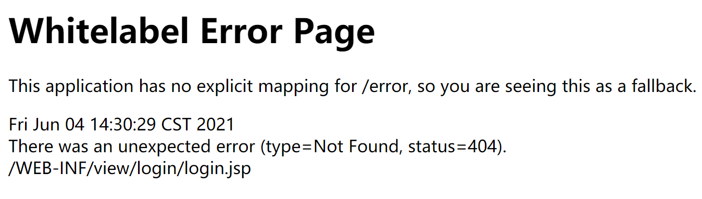
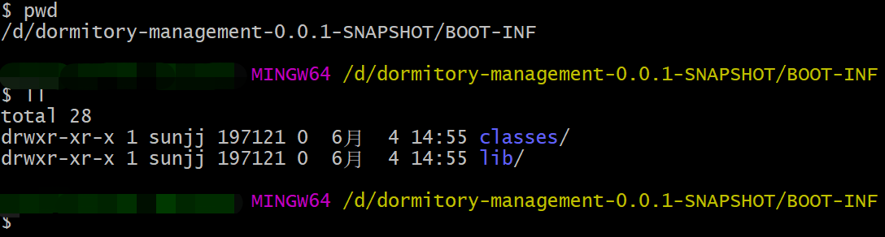

Springboot集成JSP, jar部署/war部署
前几天老大丢过来一个Springboot的项目, 让我把项目跑起来。顺便让我看看改造成本，以及能否循环再利用。本来想着又能偷懒一会了, 但是看到项目中还有JSP文件, 眉头一皱意识到并没有那么简单 😐 果然本地通过idea跑项目没问题, jar发布测试环境就有访问不了了, 所以写下这踩坑记录😭
项目简介
项目的技术栈
后端：SpringBoot、jpa
前端：JSP、Thymeleaf、Bootstrap、EasyPOI
部署
(一)、多次重定向问题
1. 服务部署，启动
$ java -jar demo.jar
2. 启动正常，访问出错
xxx将您重定向的次数过多
尝试清除Cookie
3. 排查代码
这问题一出现首先想到代码中有没有设置重定向，查看登录拦截设置了重定向，但是不至于会多次重定向啊。
毕竟本地正常运行，所以我想看看到底是什么请求被重定向了，所以将请求路径打印一下
log.info("登录拦截，被拦截的请求路径: {}", request.getServletPath());
打印结果
登录拦截，被拦截的请求路径: /error
4. 查看登录拦截的放行路径
accept_uri = {"/login/**", "/static/**"};
到此, 原来是每次请求首页的时候，boot服务找不到指定的页面（model），所以重定向到error, 但是error请求又被登录拦截器拦截，重定向到登录页面，然后登录页面又找不到
index(首页) ===> /error ===> /login ===> /error ===> /login…
原来真正的错误被 /error 给覆盖了 😐
修改方式: 将
/error加入到accept_uri中，实现在拦截器中放行
(二)、找不到指定页面问题
1. 找不到页面

错误信息2. 排查问题
毕竟出身baidu工程师，咱baidu一下就ok 😏
原来是Springboot集成的jsp，在打成jar包部署的时候，并没有将静态jsp资源打入jar包内

jar内容3. 解决方案
- jar方式
<packing>jar</packing>
pom文件配置
<build>
<resources>
<!--意为 将webapp目录下的所有文件打包到复制到 jar包中 META-INF/resources中-->
<resource>
<directory>src/main/webapp</directory>
<targetPath>META-INF/resources</targetPath>
<includes>
<include>**/**</include>
</includes>
</resource>
<resource>
<directory>src/main/resources</directory>
<filtering>false</filtering>
<includes>
<include>**/**</include>
</includes>
</resource>
</resources>
<plugins>
<plugin>
<groupId>org.springframework.boot</groupId>
<artifactId>spring-boot-maven-plugin</artifactId>
<!--需要使用 Springboot 1.4.2.RELEASE，因为相应的maven plugin只支持到改版本-->
<version>1.4.2.RELEASE</version>
</plugin>
</plugins>
</build>
- war方式
<packing>war</packing>
这里就不具体详解如何打成war包了，各大博客网站都有相关的教程。说个我发布war的时候遇到的问题。
我将打好的demo.war包放到tomcat的webapp目录下，按理说启动的就可以正常的访问到了。结果我忘了tomcat最基本的使用方法了…直接访问了http://localhost:8081提示了tomcat的404页面。
其实访问tomcat的webapp目录下服务，需要将目录作为contextPath加上才可以正常访问，ROOT目录的话就代表可以/直接访问
参考资料:
https://blog.csdn.net/ctwy291314/article/details/88976712
https://blog.csdn.net/qq_40807739/article/details/87862968
![]()